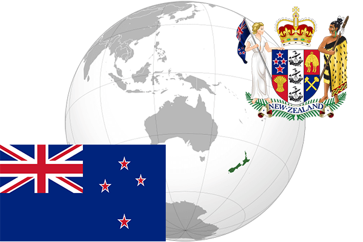

To`liq nomi: Yangi Zelandiya
Region: Tinch okeani
Qonunchilik shakli: Konstitutsiyaviy monarxiya
Mustaqillik kuni: 28 oktabr 1835-yil
Poytaxt: Velington
Maydoni: 268,680 km²
Chegaradosh davlatlari: Yo’q
Aholisi: 4,870,680 (2017-yil)
Aholi zichligi: 17.9/km2
Aholining o`rtacha yoshi: 81,40 (2015-yil)
Rasmiy tili: Ingliz tili
Dini: Xristian
Pul birligi: Yangi Zelandiya dollari
Telefon prefiksi: +64
Internet domen: .nz
Xalqaro tashkilotlarga a`zoligi: BMT, ASEAN
Dengiz va okeanlarga chiqishi: Tinch okeani
YIM: Butun: $215.1 mlrd.(2017-yil) Jon boshiga: $44,069
Yirik shaharlari: Velington, Oklend, Xemilton